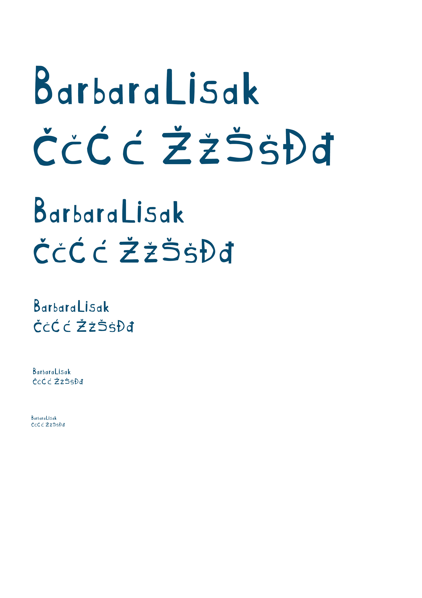

Ovdje je se nalazi prva vježba koja prikazuje samostalno izrađen font.
Sljedeće fotografije prikazuju vježbe i projektni zadatak izrađene u Adobe Illustratoru.
Koristi se za stvaranje logotipa, ilustracija, crteža i drugih grafičkih dizajna.
U vježbama su korišteni alati:Pen Tool, Fill, Stroke, gradijent i ostali.
Navedeni link vodi na pdf dokument druge vježbe.
Link na 2.vježbu

Nadalje slijede vježbe i projektni zadatak izrađeni u Adobe Photoshopu.
Pruža alate za retuširanje, manipulaciju slikama, rad sa slojevima i dodavanje specijalnih efekata.
Ovdje se nalaze vježbe napravljene u programu Premiere Pro.
U osmoj vježbi sam izradila dva kinemagrafa u .gif formatu.
U devetoj vježbi sam izradila dva videa.
Adobe Premiere Pro je softver za video montažu, korišćen za uređivanje video sadržaja, dodavanje efekata i prilagođavanje zvuka.


U zadnjoj vježbi sam izradila web stranicu pomoću alata Adobe Dreamweaver.
Adobe Dreamweaver je alat za izradu web stranica, koji omogućava vizualno dizajniranje i uređivanje koda.
U nastavku slijedi link na moju web stranicu.